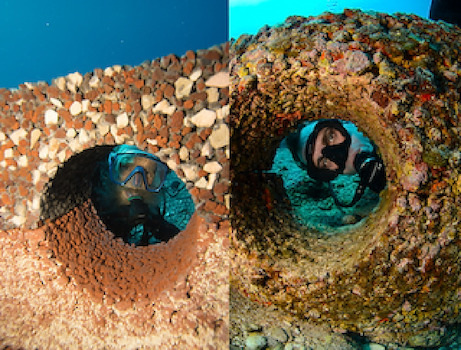
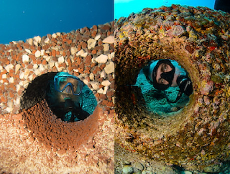

Melody Brenner
Melody Brenner, a passionate advocate for marine conservation, is the founder of the Reef Life Foundation. With a steadfast commitment to safeguarding coral reef ecosystems, Victoria harnesses her expertise and determination to drive impactful initiatives aimed at preserving marine biodiversity. Through her leadership, the Reef Life Foundation inspires collective action and fosters partnerships to ensure the long-term health and resilience of coral reefs worldwide. Melody's dedication and vision continue to make a profound impact on the preservation of our oceans for future generations.
 
